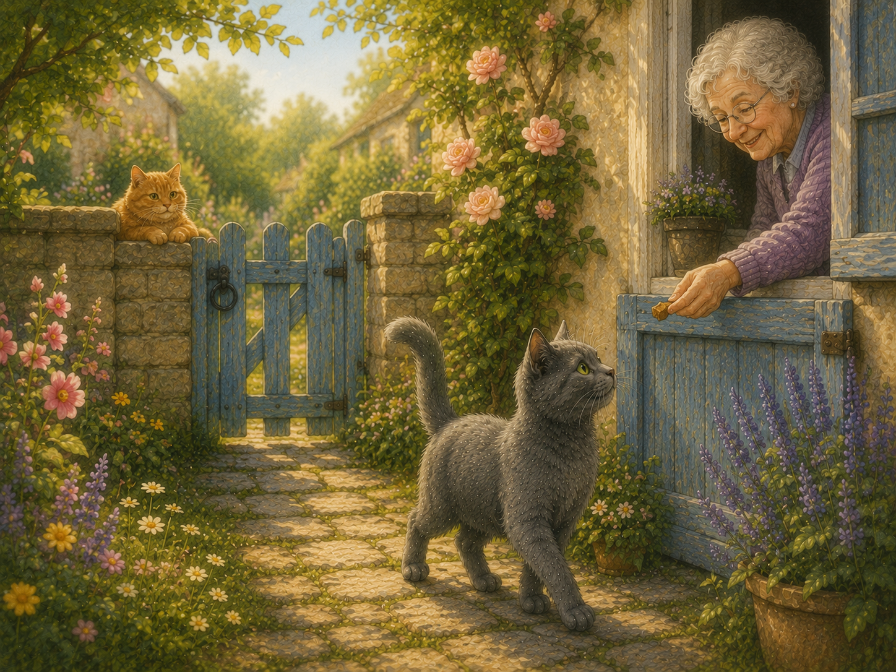
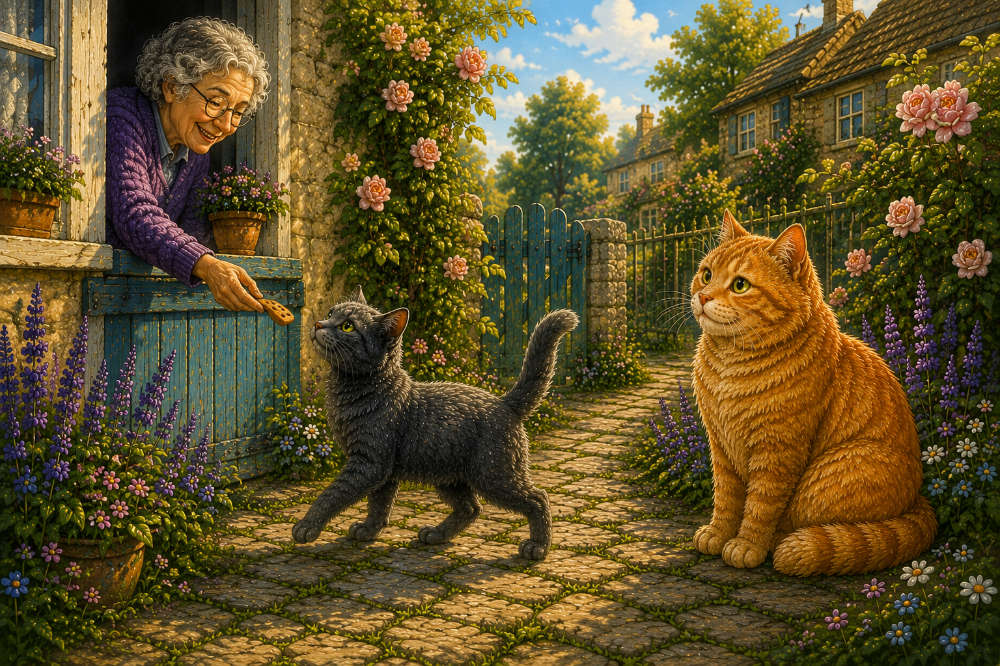
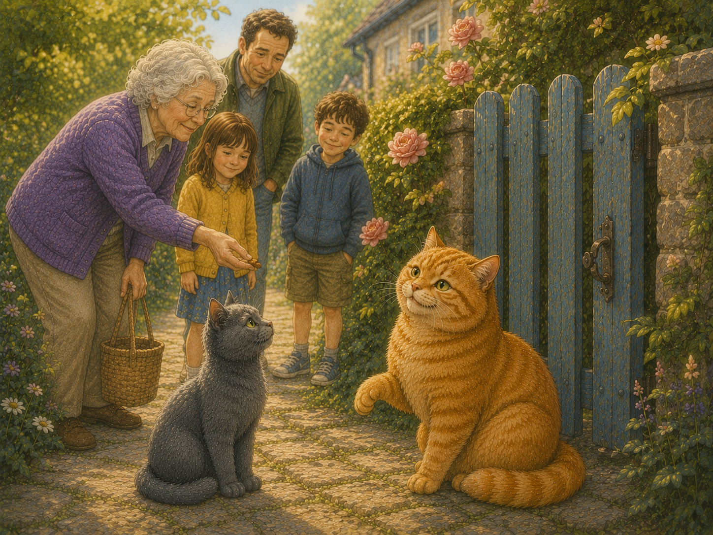
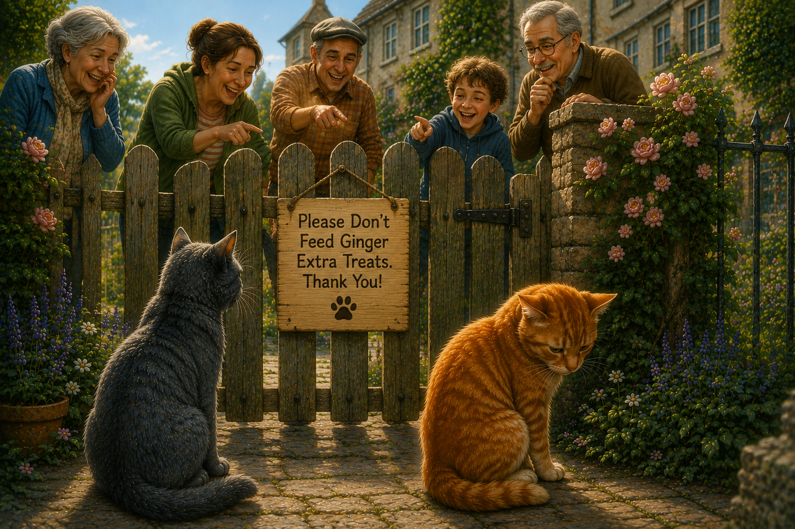
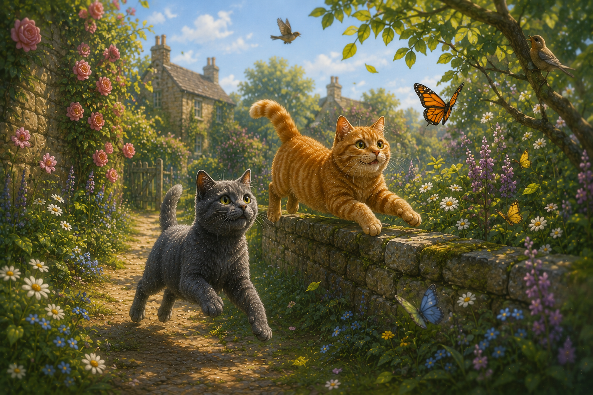
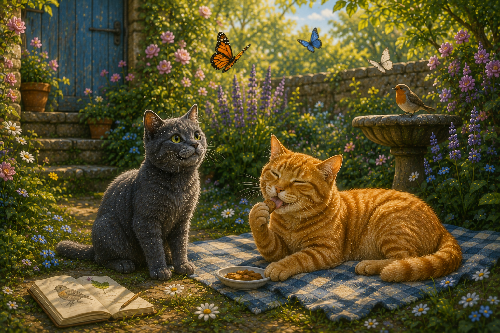
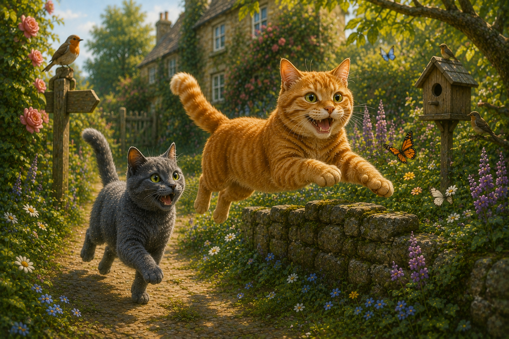
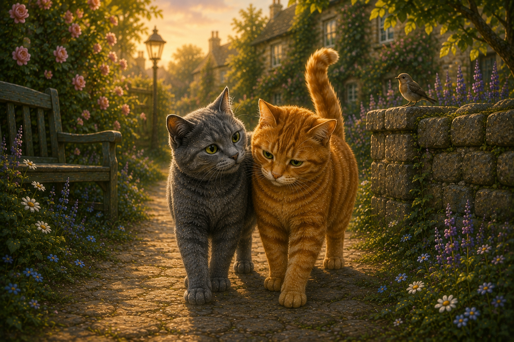

The little grey cat loved visiting the neighbours.
Sometimes it found a sunny wall.
Sometimes it found a friendly smile.
And quite often...it found a tasty cat treat.

One day, the little grey cat met an old friend.
It was the cheerful ginger cat from down the road.
The ginger cat loved treats even more than the little grey cat did.

The neighbours all knew the ginger cat.
Whenever they saw it, they smiled and reached into their pockets for another treat.
The ginger cat never wanted to disappoint them.

One morning, a new sign appeared on the garden gate.
Please Don't Feed Ginger Extra Treats. Thank You!
Some people laughed.
Some people pointed.
The ginger cat quietly looked away.
The little grey cat didn't think that was kind.

The little grey cat didn't tell its friend to stop eating treats.
Instead it said, "Would you like to come on an adventure?"
Together they chased butterflies.
They climbed low garden walls.
They explored little paths.
They watched birds and leaves dancing in the breeze.

Every day, the two friends found something new to do.
The ginger cat still enjoyed the occasional treat.
But it discovered there were lots of other things that made it happy too.

Before long, the ginger cat felt lighter.
It could run faster. Jump higher.
And laugh a little louder.
The best part wasn't having fewer treats.
The best part was sharing every adventure with a good friend.

The little grey cat learned something important.
Real friends don't laugh when someone is struggling.
They don't make them feel ashamed.
They walk beside them, one gentle step at a time.
Something to think about
How can we help a friend without making them feel bad about themselves?